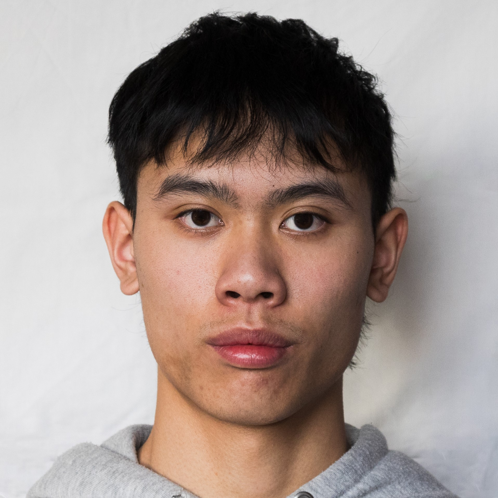
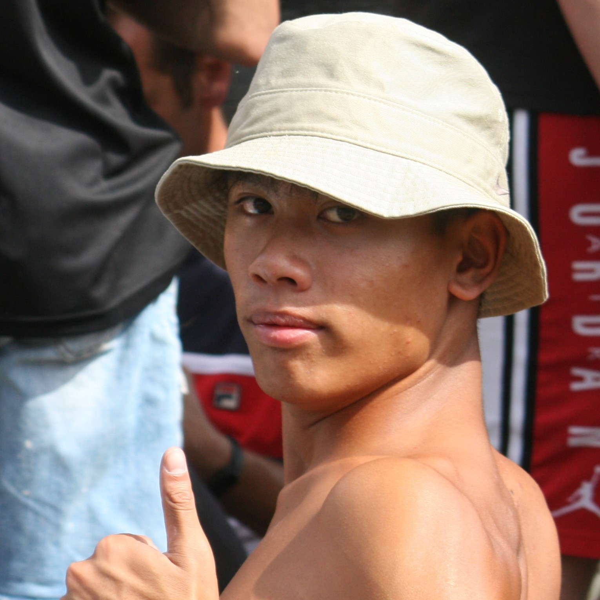

Ciao, sono Cuong.
Sono un fotografo che punta sul settore Automotive e Motorsport, Auto e Moto, eventi sportivi e raduni sono il mio pane.
Ho fotografato realtà come Panda a Pandino, partite di calcio e piccoli eventi locali, fino ad arrivare a qualche esperienza nel motorsport.
I miei viaggi mi portano in giro per il mondo, permettendomi di osservare e documentare ciò ciò che vedo.
Lavoro in sintonia con clienti e collaboratori, con rispetto e armonia per ciò che faccio.

